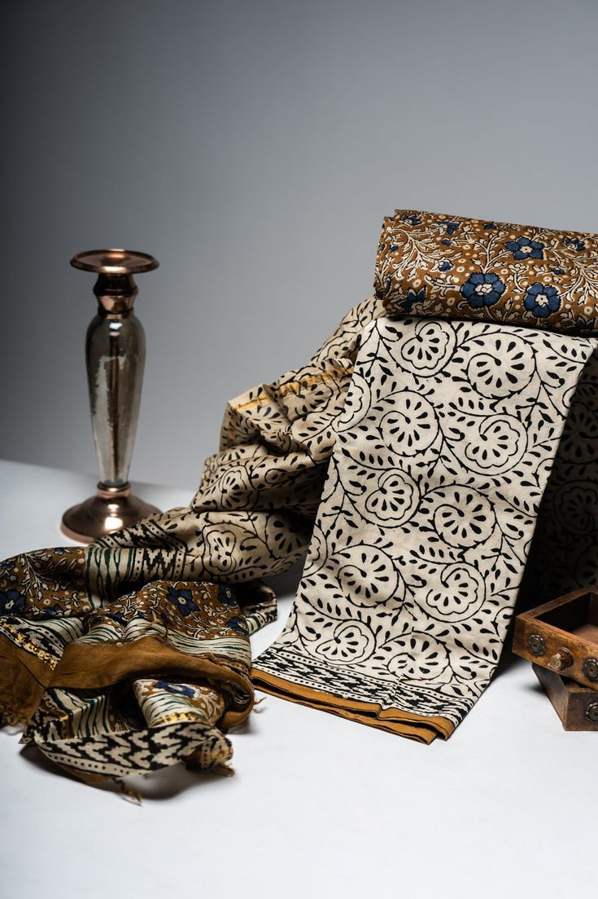
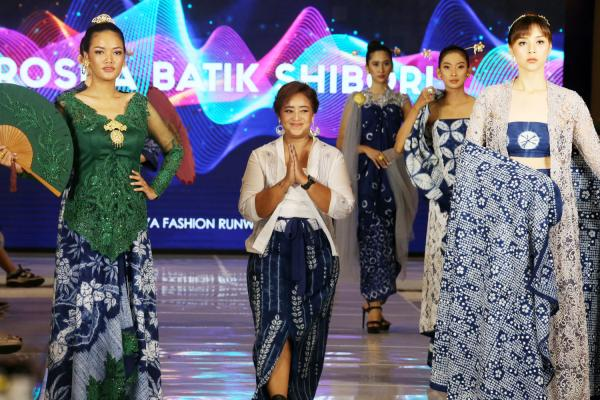
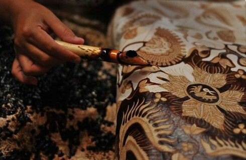

Recent News
Batik Indonesia Raih Penghargaan Bergengsi di Paris Fashion Week
Batik Indonesia kembali menorehkan prestasi membanggakan di kancah internasional. Dalam ajang Paris Fashion Week Spring/Summer 2024, desainer muda Indonesia, Intan Shofia, berhasil memukau para pencinta fashion dengan koleksi busananya yang terinspirasi dari batik. Koleksi Intan Shofia yang diberi nama "Batik Nusantara" memadukan motif batik tradisional dengan desain modern, menampilkan keindahan dan keunikan batik Indonesia kepada dunia.
Batik Digemari Generasi Muda Lewat Platform Digital
Batik kini tidak hanya digemari oleh generasi tua, tetapi juga mulai diminati oleh generasi muda. Hal ini terlihat dari semakin banyaknya generasi muda yang mengenakan batik dalam berbagai acara, baik formal maupun non-formal. Popularitas batik di kalangan generasi muda juga didorong oleh kemunculan platform digital yang memudahkan mereka untuk mencari dan membeli batik. Berbagai platform e-commerce dan media sosial kini menawarkan berbagai macam batik dengan model dan harga yang beragam, sehingga memudahkan generasi muda untuk menemukan batik yang sesuai dengan selera dan kebutuhan mereka.tor venenatis. Sed eget tellus vitae dui lobortis finibus.
Batik Menjadi Bagian dari Diplomasi Budaya Indonesia
Batik telah menjadi salah satu alat diplomasi budaya yang efektif bagi Indonesia. Batik sering kali diperkenalkan kepada dunia melalui berbagai acara budaya dan pameran internasional. Batik juga menjadi salah satu suvenir yang paling diminati oleh wisatawan asing yang berkunjung ke Indonesia. Upaya diplomasi budaya melalui batik ini telah berhasil meningkatkan citra Indonesia di mata dunia dan memperkuat hubungan bilateral dengan berbagai negara.